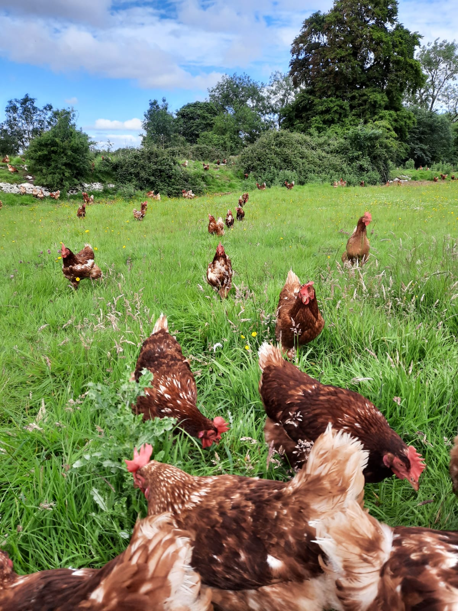
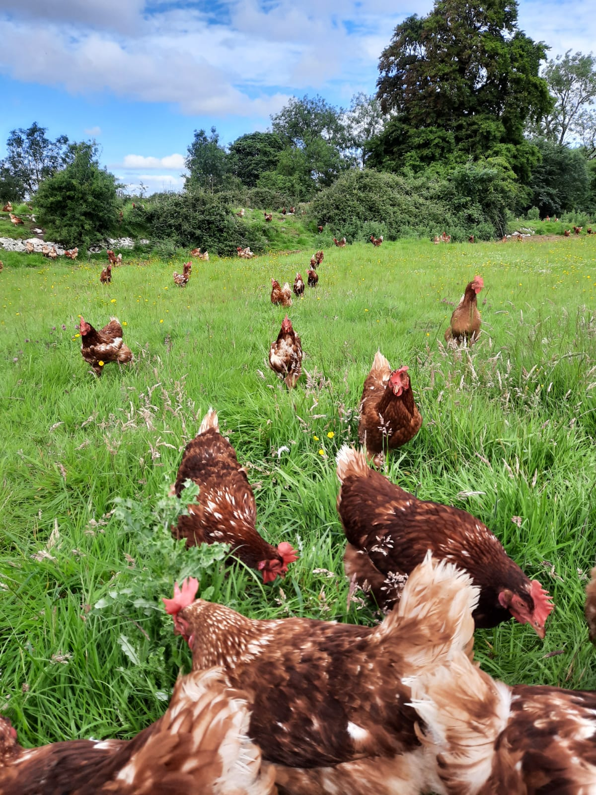

Free Range Eggs (Class A)
We are specialist producers of quality free range eggs. Our family is always available to care for
our hens and we pay particular attention to bird welfare and husbandry management.
- Available in pack sizes with x6, x10 and x15 eggs.
- Our on-farm free range egg packing centre is approved by the Department of Agriculture & Food,
all eggs are fully traceable, local and delivered direct to you.
- You and your customers can be assured of super fresh eggs always
Nutritional Highlights
One egg contains just 5 grams of fat and only 1.5 grams of that is saturated fat. The rest of the fat
is heart – healthy monounsaturated and polyunsaturated fat.
Brain Health
One egg yolk has about 300 micrograms of choline, and important nutrient that helps to regulate the
brain, nervous system, and cardiovascular system.
Vitamin Source
Egg whites are rich sources of selenium, vitamin D, B6, B12 and minerals such as zinc, iron, fat
soluble vitamins A, D, E and K and lecithin. Vitamin D is essential for bone growth, immunity and
much more..
Protein and Amino Acids
Eggs contain about 6.30 grams of protein, making them one of the best food sources of protein. Eggs
also contain all nine essential amino acids and three of the non-essential amino acids.


 
